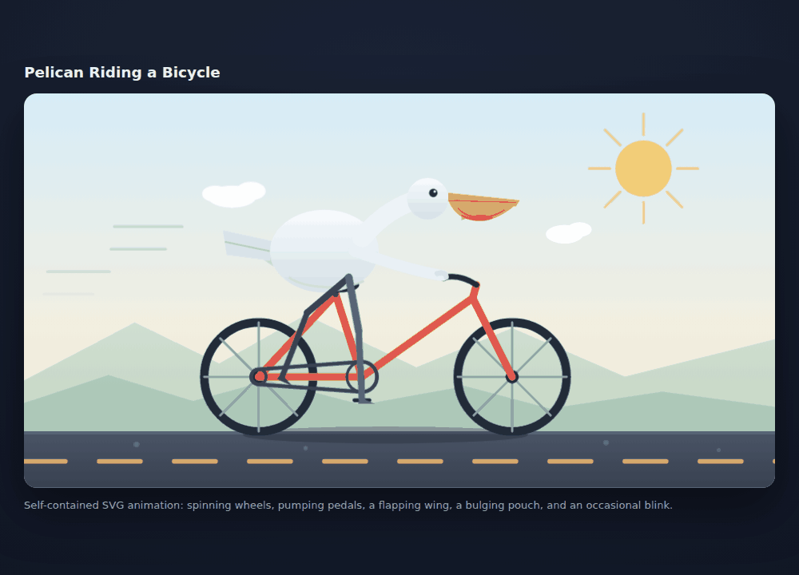
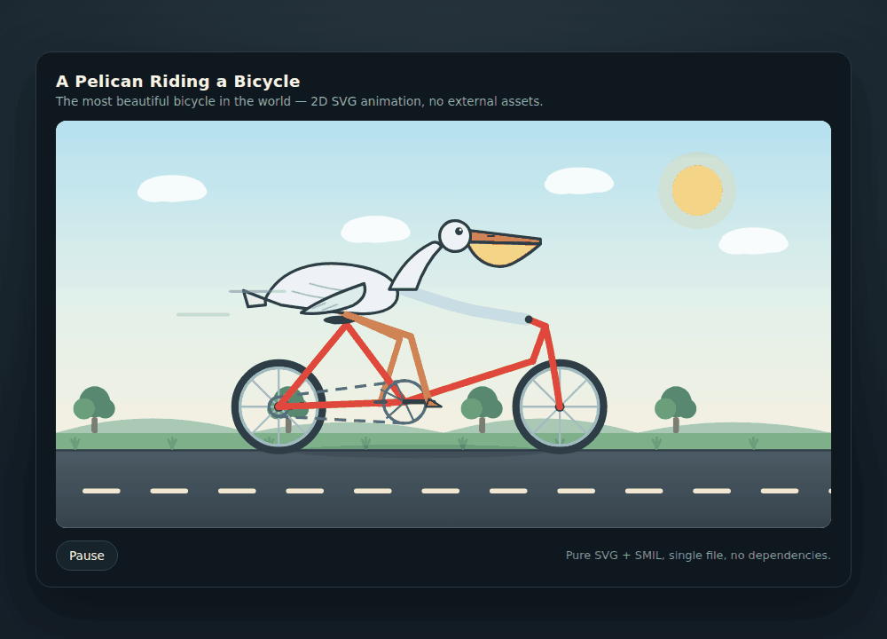
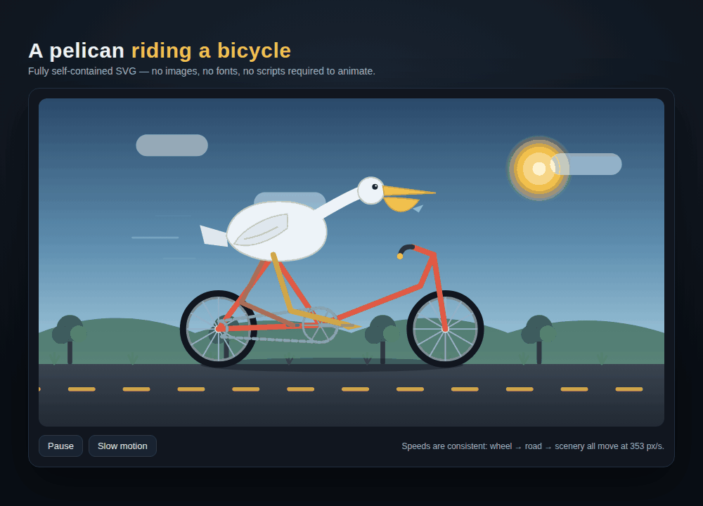
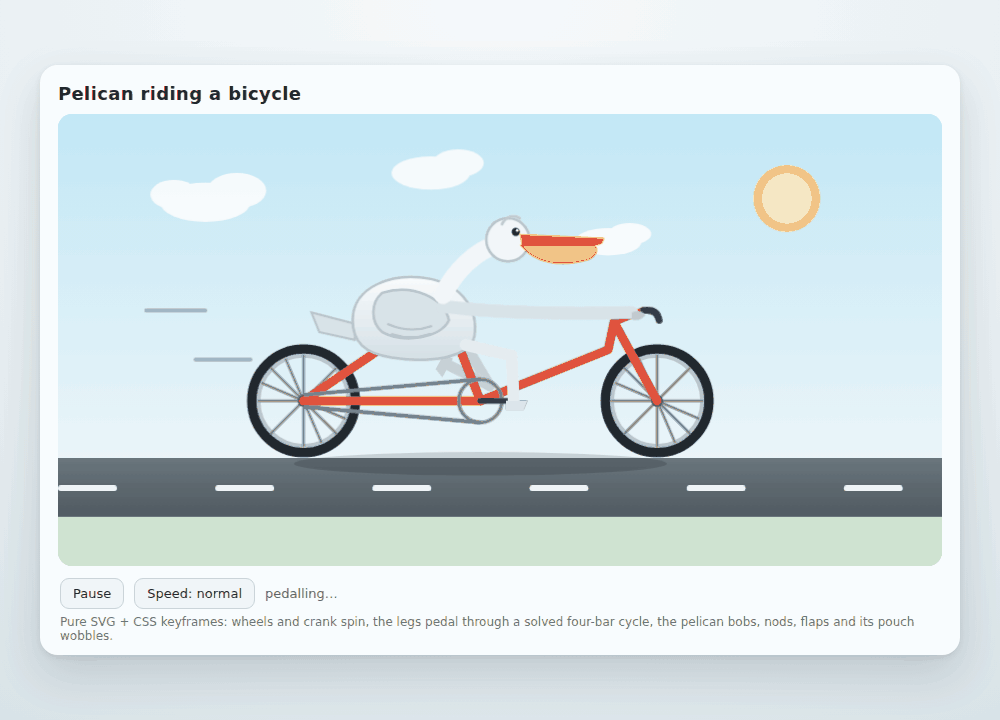

Strata — trial 1
407.4 s · 11 model calls · 95,336 output tokens

Claude Code 2.1.290 · maximum effort · identical initial prompt · one L40S · model loading excluded.
All four original outputs are shown. Completion time includes different thinking and tool-use trajectories; it is not a pure decode speed ratio.
407.4 s · 11 model calls · 95,336 output tokens

180.2 s · 7 model calls · 37,142 output tokens

120.2 s · 7 model calls · 23,418 output tokens

351.6 s · 18 model calls · 84,373 output tokens
